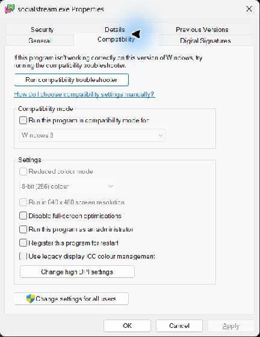
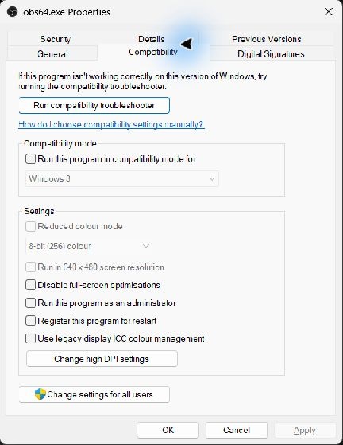

Only Use This For A Confirmed Permission Problem
OBS and Social Stream normally should not need administrator access. Start both normally unless a Windows privilege mismatch has been confirmed or support has specifically asked you to test this.
A blank unified chat, an old Browser Source URL, or a stale OBS cache is usually fixed by replacing the URL and refreshing the cache, not by administrator mode.
If one app is elevated and the other is not, Windows can limit how they interact. For a permission-mismatch test, close both apps first and run both at the same privilege level.
One-Time Administrator Test
- Close OBS Studio and the Social Stream desktop app.
- Right-click the OBS Studio shortcut and choose Run as administrator.
- Approve the Windows User Account Control prompt.
- If you are testing a mismatch between the two apps, right-click the Social Stream shortcut, choose Run as administrator, and approve its prompt too.
- Repeat the exact workflow that previously failed. When finished, close both apps; the one-time elevation ends when they exit.
Prefer this test first. It confirms whether elevation matters without permanently changing either app.
Always Run Social Stream As Administrator
- Close Social Stream.
- Right-click its shortcut and choose Open file location. If Windows opens another shortcut, right-click that shortcut and choose Open file location again.
- Right-click socialstream.exe and choose Properties.
- Open the Compatibility tab.
- Select Run this program as an administrator, then choose Apply and OK.

A typical per-user installation is:
%LOCALAPPDATA%\Programs\socialstream\socialstream.exeYour path may differ if you chose another installation location.
Always Run OBS As Administrator
- Close OBS Studio.
- Right-click the OBS Studio shortcut and choose Open file location.
- Right-click obs64.exe and choose Properties.
- Open the Compatibility tab.
- Select Run this program as an administrator, then choose Apply and OK.

The default 64-bit OBS path is commonly:
%ProgramFiles%\obs-studio\bin\64bit\obs64.exeYour path may differ for portable or custom installations.
Turn Administrator Mode Off Again
- Close the app.
- Open the executable's Properties → Compatibility tab.
- Clear Run this program as an administrator, then choose Apply and OK.
- Do the same for the other app so OBS and Social Stream return to the same normal privilege level.
Do not disable User Account Control. For background on elevated applications, see Microsoft's administrator mode explanation.